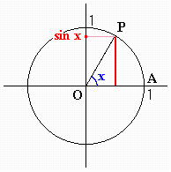

|
The figure shows a definition of sine function. The unit circle is the circle with its center at the origin and a radius of 1. Angle x is formed by rotating OA about the origin to OP. Then the y-coordinate of point P is sin x. |  |
| Input an angle (degrees), then press enter key or click "Start" button. |
Using the applet, find angle x that satisfies
|